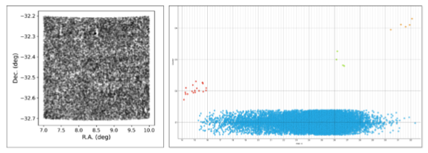
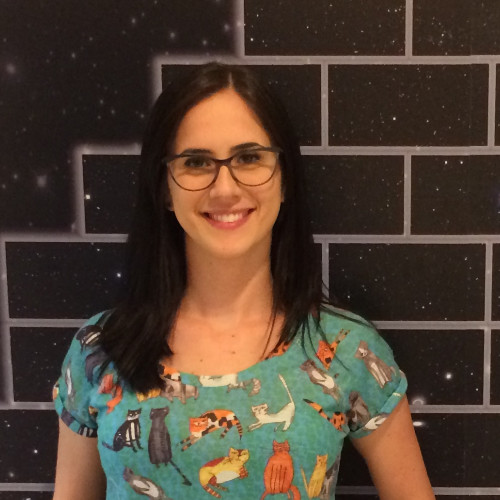

Provenance
Algorithms and techniques to extract, model, and manage provenance data of federated training, integrated into existing frameworks.
PT-BRExecução e Análise de Workflows de Aprendizado de Máquina Federado para Astronomia em Ambientes de Computação de Alto Desempenho
The project develops algorithms and techniques to extract, model, and manage provenance data in Federated Learning, so that training tasks can be allocated and scheduled better across heterogeneous nodes and users get analytical support. The case study is the detection of outlier objects in large astronomical catalogs of the Legacy Survey of Space and Time (LSST).
In recent decades, Machine Learning has received growing attention from both academia and industry. However, traditional Machine Learning approaches face critical challenges, especially regarding data privacy and the volume and transfer of information to be processed. To address these issues, Federated Learning has emerged as a promising solution. This approach allows different nodes in a network to train models collaboratively without the need for direct sharing of examples, thereby preserving privacy and minimizing the amount of data transmitted between parties.
However, the training process in Federated Learning brings specific challenges, such as the heterogeneity of participating nodes, which vary in terms of computational capacity and data characteristics. The effective distribution of training tasks among these nodes is crucial to ensure the process is both efficient and fair. Another critical point involves the monitoring and analysis of workflows in Federated Learning. Although tasks generate and consume large amounts of data, the lack of clear provenance documentation makes it difficult to analyze the results obtained.
Provenance data capture provides an effective solution, increasing reliability, reproducibility, and offering mechanisms for interpreting the resulting models. Nevertheless, in the specific context of Federated Learning, the use of provenance data is still at an early stage, with current solutions showing limitations in capturing relevant metadata and in leveraging it for training monitoring and optimization.
This project aims to address these gaps by proposing the development of algorithms and techniques that enable the extraction, modeling, and management of provenance data in the Federated Learning environment. The goal is not only to improve the allocation and scheduling of training tasks, but also to provide robust analytical support to users by integrating provenance data into existing frameworks.
As a case study, we will use an application for identifying outlier objects in large astronomical catalogs. This application is part of the Legacy Survey of Space and Time (LSST) project, which generates 20 TB of raw data per night and has a naturally distributed processing infrastructure. The project thus seeks to contribute to making Federated Learning more efficient and explainable, with a special focus on Astronomy applications, where scalability and proper data handling are essential for scientific advances.
Capture provenance data and the relevant metadata of federated training workflows, which current Federated Learning solutions record only partially.
Manage provenance inside the Federated Learning frameworks that users already rely on, instead of requiring a new programming model.
Use provenance to distribute training tasks among heterogeneous nodes, which differ in computational capacity and data characteristics, so that training is efficient and fair.
Give users analytical support to monitor training, interpret the resulting models, and reproduce experiments.
Evaluate the techniques on outlier detection in large astronomical catalogs, in high-performance and cloud computing environments.
Algorithms and techniques to extract, model, and manage provenance data of federated training, integrated into existing frameworks.
Allocation and scheduling of training tasks over heterogeneous nodes, weighing training time against the financial cost of the resources.
Visual exploration of training rounds, client participation, and resulting models to help users interpret what was learned.

The Legacy Survey of Space and Time (LSST), carried out at the Vera C. Rubin Observatory, generates about 20 TB of raw data per night and relies on a naturally distributed processing infrastructure. Moving whole catalogs to a single site to train a model runs into data transfer bottlenecks and storage constraints, so Federated Learning trains the model where the data are.
The project uses catalogs from the Dark Energy Survey (DES) as a proxy for LSST and emulates federated deployments on commercial clouds, measuring the trade-offs between training time and financial cost.



The project involves 3 MSc and 6 PhD students.
Publications by the team on the project's themes. Each entry links to the publisher's page.
ConferenceXXVI Brazilian Symposium on High Performance Computing Systems (SSCAD 2025), pp. 362–373
ConferenceXXVI Brazilian Symposium on High Performance Computing Systems (SSCAD 2025)
ConferenceBrazilian Symposium on Databases (SBBD 2024), pp. 27–39
ConferenceLatin America High Performance Computing Conference (CARLA 2023), CCIS 1887, pp. 113–127
Demo / toolCompanion Proceedings of the Brazilian Symposium on Databases (SBBD 2023)
Open-source tools used in the project for provenance capture, experiment visualization, and resource orchestration.
Federated k-means clustering with scikit-learn, using MiniBatch-style aggregation, instrumented with DfAnalyzer to capture prospective and retrospective provenance of each round.
Web application for managing and visualizing federated learning experiments, with a t-SNE service for model inspection. Uses AkôFlow for AWS provisioning and execution monitoring.
Presented by Daniel de Oliveira at INRIA Bordeaux (TADaaM group), during a UFFeScience visit within the DECoHPC Équipe Associée.
Interview with Luiz Nicolaci (LIneA) and Daniel de Oliveira, in Portuguese.
Olhar Digital, June 2025: Brazilian participation in processing LSST data (in Portuguese).

This project is funded by the Brazilian National Council for Scientific and Technological Development (CNPq) through a research grant (Auxílio financeiro) of the CNPq/MCTI/FNDCT program.